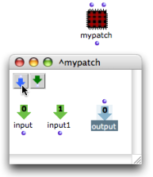
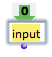
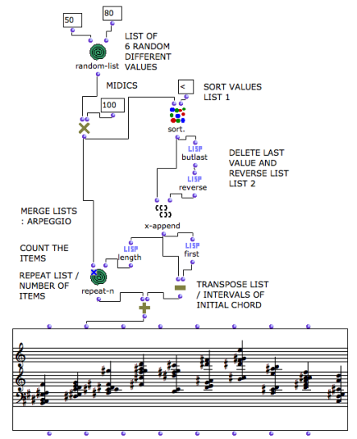

OpenMusic DocumentationHiérarchie de section : OM 6.6 User Manual > Visual Programming II > Abstraction > Application > Inputs / Outputs
OpenMusic DocumentationHiérarchie de section : OM 6.6 User Manual > Visual Programming II > Abstraction > Application > Inputs / Outputs
Navigation : page précédente | page suivante
Attention, votre navigateur ne supporte pas le javascript ou celui-ci à été désactivé. Certaines fonctionnalités de ce guide sont restreintes.
Inputs / Outputs
Creating Connections to the Outside
Once a patch is added in another patch editor, it can be used as an abstraction[1].
An abstraction can have as many inlets and outlets as necessary to establish connections with other boxes.
Values are returned by the inlets from the outside to the sub patch .
Results of computations are returned by the outlets to the outside.
Adding Inputs and Outputs
Inputs and outputs are added with a click on the To add the desired number of inputs and outputs, click as many times as necessary on the corresponding icons. Inlets and outlets will appear on the sub patch icon. Connections to other boxes in the patch editor can then be created. |

|
Internal Evaluation

{kind=link}
An internal patch can potentially be used in an infinite number of configurations. Hence, if a patch is assigned input boxes, OM considers that these boxes can get any values from the outside. Consequentely, when a patch with input boxes is evaluated from the inside, the values outside the patch are ignored, and OM returns "nil".
To be evaluated, a program that is assigned values from the outside of a patch must be evaluated from the outside of the patch , via its output.
If an internal patch is assigned its own default values , it can then be evaluated from the inside.
Assigning Default Values to Input Boxes
Naming Inputs and Outputs
To rename inputs and outputs :
| 1. double click on the name of the icon : , | 2. edit it and validate : |
This has no effect on the input or output's behaviour.
More Information about Input Boxes Edition :
Viewing Inlets and Outlets
Inlets and outlets of blue patches are not visible in the workspace. |

|

|
To display information about inputs and outputs names, as well as a possible documentation, keep |
Example : Using a Sub Patch as a Functional Abstraction
Once a patch is added one or more inputs and connected to other items, it can manipulate variables, just like a function does. These variables are taken as arguments by the function. Data returned by the abstraction output(s) can also become variables for other boxes or for other functional abstractions.
A "Large" Program
The following program is quite developed. It could be used as a subordinate and coherent element in a more important patch. We will integrate it in a patch to use it as an abstraction.

Building successive chords from a chord multiplication.
Adding Inputs and Outputs to the Patch
|

|
Functional Call of the Patch
The patch is dropped into another patch editor .
Hence, the patch behaves like a function within a "larger-scale" program. |

|
Références :
Functional Abstraction
A functional abstraction is a program whose some elements can become variables, via connections to the outside environment. Hence, this program must have inputs or outputs that can be connected to external variable elements. The resulting functional abstraction can then be embedded into other programs to be used as a functional component.
Plan :
Navigation : page précédente | page suivante
A propos...(c) Ircam - Centre Pompidou